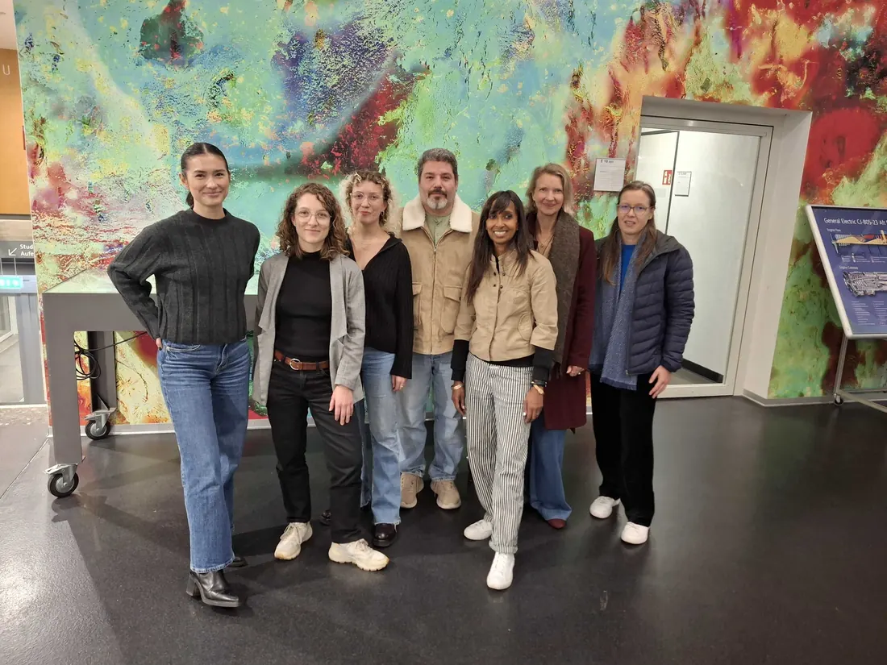

SEET richtet sich an zukünftige Study-Support-Mentor:innen bei ETH-Diversity-Veranstaltung
SEET target future study support mentors at ETH Diversity event
SEET s'adresse aux futurs mentors lors d'un événement diversité de l'ETH

Wie zeigen die Schweiz und ihre Hochschulen Gastfreundschaft gegenüber geflüchteten Akademiker:innen? Diese Frage stand am Montag, dem 10. November, im Zentrum einer Veranstaltung an der ETH Zürich. Organisiert wurde der Event von ETH Diversity, mit Beteiligung von SEET, dem Immigration Policy Lab und der WIDE Group D-GESS.
Das ETH-Diversity-Büro hat ein breites Aufgabenfeld: Es ist in nationalen und internationalen Netzwerken aktiv, die Chancengleichheit, Diversität und Inklusion fördern; unterstützt die Karriereentwicklung von Frauen in der Wissenschaft; fördert die Integration geschlechtsspezifischer Aspekte in Forschung und Lehre; und setzt sich dafür ein, dass alle Mitglieder der ETH Zürich erfolgreich studieren, forschen und arbeiten können – unabhängig von Herkunft, „Rasse“, Geschlecht, Alter, Sprache, sozialem Status, Lebensstil, religiösen, ideologischen oder politischen Überzeugungen, sexueller Orientierung und Geschlechtsidentität, körperlicher oder psychischer Beeinträchtigung oder beruflichem Status.
ETH-Diversity-Projektmanagerin Loren Schaad eröffnete die Veranstaltung und stellte anschliessend die erste Referentin vor: Kristina Schüpbach, Ökonomin und Doktorandin am KOF Schweizerischen Wirtschaftsinstitut der ETH Zürich. Ihre Forschung konzentriert sich auf Arbeitsökonomie und soziale Ungleichheiten, insbesondere auf Diskriminierung auf dem Arbeitsmarkt.
In einer umfassenden dreissigminütigen Präsentation teilte Kristina Einblicke aus der Forschung ihres Teams zu Diskriminierung im Bewerbungsprozess in der Schweiz: wie ethnische Herkunft oder Nationalität die Jobchancen beeinflussen, wie sich solche Diskriminierung messen lässt und was die Ergebnisse über den Schweizer Arbeitsmarkt aussagen.
Kristina begann mit einem Überblick über die Arbeitsmarktaussichten und Integrationssituation von Geflüchteten bei ihrer Ankunft in der Schweiz. Sie verwies auf Studien, die zeigen, dass nur jede:r zehnte Geflüchtete innerhalb der ersten zwölf Monate im neuen Land eine Arbeitsstelle findet – ein Hinweis auf die vielschichtigen Gründe für diese „langsame“ Integration.
Ein Mangel an passenden Sprachkenntnissen, im Herkunftsland erworbene Abschlüsse, die in der Schweiz nicht anerkannt werden, gesundheitliche Probleme oder traumatische Erfahrungen sowie ein eingeschränktes Verständnis des Schweizer Arbeitsmarktes wurden als wichtige Faktoren genannt. Ebenso tragen rechtliche Hürden aufgrund der Migrationspolitik – etwa die geografische Verteilung von Geflüchteten über die Kantone, die oft nicht mit den Arbeitsmarktchancen übereinstimmt – dazu bei, dass sich Geflüchtete historisch weniger erfolgreich integrieren, auch wenn es in den letzten zwei Jahrzehnten deutliche Fortschritte gab.
Kristinas Präsentation beleuchtete zudem die oft harte Realität von Diskriminierung, mit der Geflüchtete konfrontiert sind, sowie die Bedeutung von Unterstützungssystemen, die ihnen helfen, das komplexe Schweizer Bildungs- und Arbeitsmarktsystem zu navigieren.
Dies leitete perfekt zu Dr. Krishna Bharathi über. Krishna ist praktizierende Architektin und Sozialwissenschaftlerin mit Expertise im Wissensaustausch und in gruppenbasierten Entscheidungsprozessen. Sie hat in Nordamerika und Europa in unterschiedlichen Lehr-, Forschungs- und Managementfunktionen gearbeitet und engagiert sich als freiwilliges Mitglied und Mentorin im SEET-Programm.
Krishna stellte das SEET-Studienunterstützungsprogramm vor und erläuterte insbesondere die Möglichkeiten, sich als Mentor:in zu engagieren und Geflüchtete zu unterstützen, die ihr Studium in der Schweiz (neu) beginnen möchten.
Während viele Schweizer Hochschulen unterschiedliche „Bridge-Programme“ für Geflüchtete anbieten, hob Krishna das Wachstum des SEET-Programms hervor: Die Zahl der Mentee-Mentor-Tandems stieg von 3 in 2018–2019 auf 7 im Jahr 2020; 10 im Jahr 2021; 13 im Jahr 2022; 18 im Jahr 2023; und 33 im Jahr 2024.
Derzeit begleitet das SEET-Programm 29 Mentees (aus Afghanistan, Eritrea, Georgien, Iran, Sudan, Syrien, Türkei und Ukraine) sowie 25 Mentor:innen auf ihrem gemeinsamen Weg in der Kohorte 2025/26. Weitere 10 Teilnehmende profitieren ebenfalls vom Programm, einige davon bereits im zweiten Jahr – jedoch ohne zugewiesene Mentor:innen.
Obwohl der aktuelle Programmzyklus erst im Frühjahr 2026 endet, beginnt die Rekrutierung von Mentor*innen und Mentees für 2026/2027 bereits Anfang nächsten Jahres.
How do Switzerland and Swiss universities extend hospitality to refugee academics? On Monday 10 November, this was the question fuelling a conversation at the ETH in Zurich. The event was organised by ETH Diversity, with participation also from SEET, the Immigration Policy Lab and WIDE Group D-GESS.
The ETH Diversity Office has a wide brief, involved in national and international networks that promote equal opportunities, diversity and inclusion; support the career development of women in academia; promote the integration of gender-specific aspects in research and teaching; and is committed to ensuring all members of ETH Zurich enjoy studying, researching and working successfully; regardless of factors such as origin, race, gender, age, language, social status, lifestyle, religious, ideological or political beliefs, sexual orientation and gender identity, physical and mental disability, or professional status.
ETH Diversity Project Manager Loren Schaad opened the proceedings before introducing the first speaker. Kristina Schüpbach is an economist and doctoral researcher at the KOF Swiss Economic Institute at ETH Zurich. Her research focuses on labour economics and social inequalities, with a particular interest in discrimination in the labour market.
Over the course of a comprehensive thirty-minute presentation, Kristina shared insights from her team’s research on discrimination in the hiring process in Switzerland, how ethnicity or nationality influences job opportunities, how such discrimination can be measured, and what the findings reveal about the Swiss labour market.
Kristina began by highlighting the work prospects and labour integration situation encountered on arrival in Switzerland. Citing research outlining how only 1 in 10 refugees are employed within the first twelve months of living in their new country, there were myriad reasons behind this ‘slow’ integration.
A lack of appropriate language skills, qualifications from countries of origin not recognised in Switzerland, health issues and trauma, as well as a poor comprehension of the Swiss labour market were all outlined as influential factors. Likewise, legal barriers based on Immigration Policy – where the distribution of refugees across Swiss cantons does not correlate to labour market opportunities and other legislative hurdles – despite some marked progress over the last two decades – explained why refugees historically integrate less successfully.
Kristina’s presentation also shone the spotlight on the harsh reality of discrimination often faced by refugees, and the importance for refugees to find support to help them navigate the complexities of the Swiss education system and labour market.
This provided the perfect segue for Kristina to pass the microphone to Dr. Krishna Bharathi. Krishna is a practicing architect and social scientist with expertise in knowledge transfer and processes of group decision-making. She has worked in a variety of teaching, research, and management roles in North America and Europe. Krishna is also a volunteer member and mentor in the SEET programme.
By introducing the SEET study support programme, Krishna outlined opportunities for participation, in particular as a mentor, assisting refugees looking to (re)start their studies in Switzerland.
Whilst many academic institutions in Switzerland partner on different ‘Bridge Programmes’ for refugees, Krishna outlined the growth of the SEET programme, with the number of mentee-mentor tandem partnerships rising from 3 in 2018-2019; 7 in 2020; 10 in 2021; 13 in 2022; 18 in 2023; and 33 in 2024.
Currently, the SEET programme is supporting 29 mentees (from Afghanistan, Eritrea, Georgia, IR Iran, Sudan, Syria, Turkey and Ukraine), together with 25 mentors on a journey together as the 2025/26 cohort. Another 10 program participants are also benefiting from the programme without a mentor, some of whom are in their second year.
Although the current SEET programme cycle is not due to conclude until Spring 2026, the recruitment of mentors and mentees for 2026/2027 will commence in the early part of next year.
Wie zeigen die Schweiz und ihre Hochschulen Gastfreundschaft gegenüber geflüchteten Akademiker:innen? Diese Frage stand am Montag, dem 10. November, im Zentrum einer Veranstaltung an der ETH Zürich. Organisiert wurde der Event von ETH Diversity, mit Beteiligung von SEET, dem Immigration Policy Lab und der WIDE Group D-GESS.
Das ETH-Diversity-Büro hat ein breites Aufgabenfeld: Es ist in nationalen und internationalen Netzwerken aktiv, die Chancengleichheit, Diversität und Inklusion fördern; unterstützt die Karriereentwicklung von Frauen in der Wissenschaft; fördert die Integration geschlechtsspezifischer Aspekte in Forschung und Lehre; und setzt sich dafür ein, dass alle Mitglieder der ETH Zürich erfolgreich studieren, forschen und arbeiten können – unabhängig von Herkunft, „Rasse“, Geschlecht, Alter, Sprache, sozialem Status, Lebensstil, religiösen, ideologischen oder politischen Überzeugungen, sexueller Orientierung und Geschlechtsidentität, körperlicher oder psychischer Beeinträchtigung oder beruflichem Status.
ETH-Diversity-Projektmanagerin Loren Schaad eröffnete die Veranstaltung und stellte anschliessend die erste Referentin vor: Kristina Schüpbach, Ökonomin und Doktorandin am KOF Schweizerischen Wirtschaftsinstitut der ETH Zürich. Ihre Forschung konzentriert sich auf Arbeitsökonomie und soziale Ungleichheiten, insbesondere auf Diskriminierung auf dem Arbeitsmarkt.
In einer umfassenden dreissigminütigen Präsentation teilte Kristina Einblicke aus der Forschung ihres Teams zu Diskriminierung im Bewerbungsprozess in der Schweiz: wie ethnische Herkunft oder Nationalität die Jobchancen beeinflussen, wie sich solche Diskriminierung messen lässt und was die Ergebnisse über den Schweizer Arbeitsmarkt aussagen.
Kristina begann mit einem Überblick über die Arbeitsmarktaussichten und Integrationssituation von Geflüchteten bei ihrer Ankunft in der Schweiz. Sie verwies auf Studien, die zeigen, dass nur jede:r zehnte Geflüchtete innerhalb der ersten zwölf Monate im neuen Land eine Arbeitsstelle findet – ein Hinweis auf die vielschichtigen Gründe für diese „langsame“ Integration.
Ein Mangel an passenden Sprachkenntnissen, im Herkunftsland erworbene Abschlüsse, die in der Schweiz nicht anerkannt werden, gesundheitliche Probleme oder traumatische Erfahrungen sowie ein eingeschränktes Verständnis des Schweizer Arbeitsmarktes wurden als wichtige Faktoren genannt. Ebenso tragen rechtliche Hürden aufgrund der Migrationspolitik – etwa die geografische Verteilung von Geflüchteten über die Kantone, die oft nicht mit den Arbeitsmarktchancen übereinstimmt – dazu bei, dass sich Geflüchtete historisch weniger erfolgreich integrieren, auch wenn es in den letzten zwei Jahrzehnten deutliche Fortschritte gab.
Kristinas Präsentation beleuchtete zudem die oft harte Realität von Diskriminierung, mit der Geflüchtete konfrontiert sind, sowie die Bedeutung von Unterstützungssystemen, die ihnen helfen, das komplexe Schweizer Bildungs- und Arbeitsmarktsystem zu navigieren.
Dies leitete perfekt zu Dr. Krishna Bharathi über. Krishna ist praktizierende Architektin und Sozialwissenschaftlerin mit Expertise im Wissensaustausch und in gruppenbasierten Entscheidungsprozessen. Sie hat in Nordamerika und Europa in unterschiedlichen Lehr-, Forschungs- und Managementfunktionen gearbeitet und engagiert sich als freiwilliges Mitglied und Mentorin im SEET-Programm.
Krishna stellte das SEET-Studienunterstützungsprogramm vor und erläuterte insbesondere die Möglichkeiten, sich als Mentor:in zu engagieren und Geflüchtete zu unterstützen, die ihr Studium in der Schweiz (neu) beginnen möchten.
Während viele Schweizer Hochschulen unterschiedliche „Bridge-Programme“ für Geflüchtete anbieten, hob Krishna das Wachstum des SEET-Programms hervor: Die Zahl der Mentee-Mentor-Tandems stieg von 3 in 2018–2019 auf 7 im Jahr 2020; 10 im Jahr 2021; 13 im Jahr 2022; 18 im Jahr 2023; und 33 im Jahr 2024.
Derzeit begleitet das SEET-Programm 29 Mentees (aus Afghanistan, Eritrea, Georgien, Iran, Sudan, Syrien, Türkei und Ukraine) sowie 25 Mentor:innen auf ihrem gemeinsamen Weg in der Kohorte 2025/26. Weitere 10 Teilnehmende profitieren ebenfalls vom Programm, einige davon bereits im zweiten Jahr – jedoch ohne zugewiesene Mentor:innen.
Obwohl der aktuelle Programmzyklus erst im Frühjahr 2026 endet, beginnt die Rekrutierung von Mentor*innen und Mentees für 2026/2027 bereits Anfang nächsten Jahres.